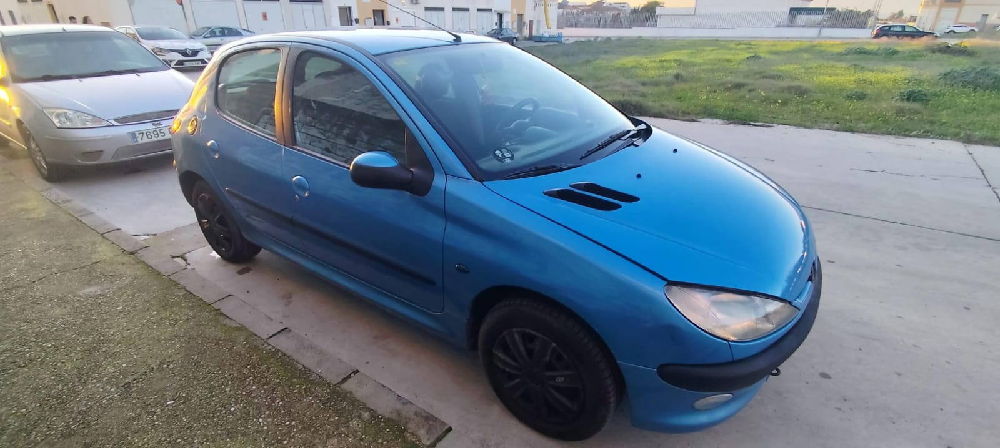
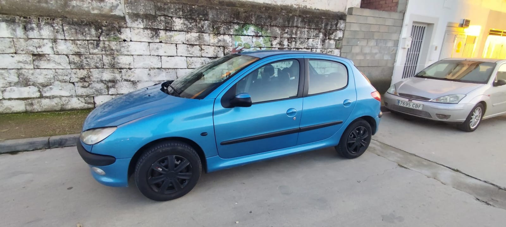
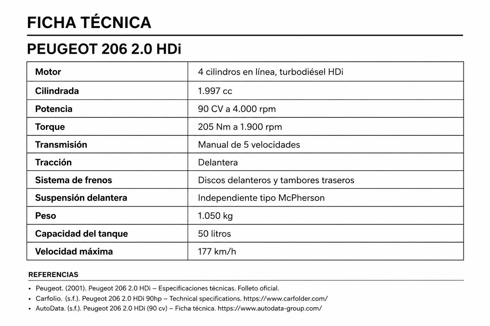

Más que un auto: 12 años de historias sobre cuatro ruedas
ML – Juan: "Es solo un auto, pero al mismo tiempo guarda innumerables historias, junto con muchos momentos inolvidables, tanto buenos como difíciles"
21 de mayo de 2026 | 5:00 p. m.

Peugeot 206 2.0 HDi propiedad de Juan. Fotografía tomada por el propietario y proporcionada para este artículo.
La historia de este Peugeot 206 comenzó mucho antes de que Juan se pusiera al volante. Todo empezó con su hermana, quien compró el auto para utilizarlo en su trabajo. Con el paso de los años y sin que nadie lo esperara, el vehículo terminó convirtiéndose en el auto de Juan.
Este Peugeot ha formado parte de algunos de los momentos más importantes de mi vida. Dentro de él terminé una relación y comencé la que tengo actualmente. He llevado a amigos, familiares e incluso a un perro que un día decidió subirse. Mi abuela y mi tía viajaron muchas veces en él y, cuando mi abuela falleció, mi auto acompañó la caravana durante su último viaje».
Cuando le preguntamos si alguna vez cambiaría su auto, Juan respondió: «No. Sigue siendo confiable, es económico de mantener y tiene demasiada historia acumulada». Decidimos analizar más de cerca qué hace que este modelo sea tan confiable. Encontramos un motor mecánicamente sencillo, capaz de recorrer cientos de miles de kilómetros con el mantenimiento adecuado. La versión 2.0 HDi cuenta con un sistema de inyección de combustible diésel y un consumo eficiente, lo que permite realizar viajes largos a un costo razonable. También ofrece una suspensión delantera resistente, con una excelente absorción de impactos, y un chasis rígido diseñado para soportar el uso cotidiano.
Ese uso diario ha convertido al Peugeot en una parte esencial de la vida de Juan. Como él mismo explica: «Ha ido conmigo a todas partes: a la playa, al campo, a las montañas, al trabajo y a innumerables viajes por carretera que han surgido espontáneamente. Nunca ha sido un auto lujoso ni moderno, pero precisamente ahí reside gran parte de su encanto. Actualmente tiene alrededor de 200.000 kilómetros y mi objetivo es conservarlo hasta que literalmente no pueda avanzar más».

Peugeot 206 2.0 HDi propiedad de Juan. Fotografía tomada por el propietario y proporcionada para este artículo.
Los orígenes de la marca Peugeot
El emblema del león de Peugeot es, sin duda, uno de los símbolos más reconocibles del mundo automotriz. Pero ¿alguna vez te has preguntado por qué la compañía eligió un león? La historia se remonta a 1810, cuando la familia Peugeot comenzó a fabricar herramientas de acero y molinillos de café. Según la tradición, el león simbolizaba la resistencia y la durabilidad de sus productos de acero, además de representar la fuerza y la determinación del animal. Años después, la compañía se expandió hacia la fabricación de bicicletas, abriendo el camino para su primer vehículo impulsado por vapor, el Peugeot Type 1 (1889), seguido de su primer automóvil con motor de combustión interna, el Peugeot Type 2 (1890).
Rally WRC
Muchas personas no saben que el Peugeot 206 también tuvo una exitosa trayectoria en el automovilismo deportivo, y no precisamente en la versión que vemos habitualmente en las calles. Se trata del Peugeot 206 WRC, un modelo desarrollado exclusivamente para el Campeonato Mundial de Rally (WRC). Entre 1999 y 2003, se convirtió en uno de los autos de rally más dominantes de su época y ayudó a Peugeot a conseguir tres títulos consecutivos del Campeonato Mundial de Constructores, entre 2000 y 2002. Estos logros aumentaron considerablemente la popularidad y el prestigio del Peugeot 206 en todo el mundo.
Una estrella de los videojuegos
En la industria de los videojuegos, el Peugeot 206 hizo su primera aparición en Gran Turismo 2 en 1999. Posteriormente, regresó en Gran Turismo 3, Gran Turismo 4 y la saga Need for Speed. Aparecer en un videojuego de carreras suele ser una señal de que un vehículo es popular y tiene una personalidad propia. No todos los autos pueden presumir de haberse ganado un lugar en una saga legendaria como Need for Speed.
